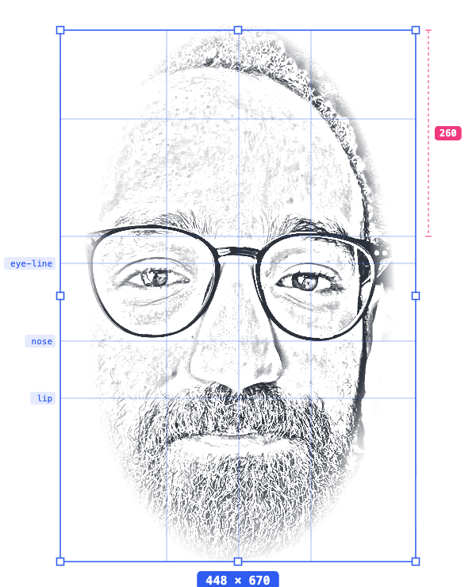

Lead Product & Experience Designer with 7–8 years shipping complex B2B platforms and AI-driven consumer products. I've led design for an enterprise MDM platform recognized at Gitex, scaled a family-safety app from 500 to 500,000 downloads, and am currently designing Iran's first AI healthcare assistant and first agriculture super-app.

I discovered user experience in my first year studying Computer Science at Amirkabir University of Technology, started taking on small projects in my second year, and was working in companies by my third. That engineering foundation still shows: I design flows with the logic of someone who understands how systems are built — which is why outsourced and distributed dev teams can implement my work without logical gaps.
Since then my career has followed one pattern: joining products at their most ambiguous stage — no flows, no system, often no precedent in the market — and leaving them with a scalable design system, a coherent experience, and a design team that can carry it forward.
“I start with the problem, never the solution. My first job is to actually understand it — then I build the foundation, a design system that can hold the product as it grows. Only then do I design the flows, in step with the development cycle, so nothing ships with a logical gap in it.”
Multiple AI-driven products shipping or in pilot — national AI healthcare (Behinto), an agriculture super-app (Agrino), and AI infrastructure platforms at Sharif AICT.
MDM/UEM, multi-panel healthcare, banking-backed and government-supported platforms — turning tangled systems into airtight, logical flows.
Repeatedly the first or only designer — building the MVP, the design system, the flows, and the team around them.
Token-based systems in light & dark from day one, and design teams — up to 5 designers at peak — who keep the product consistent as it scales.